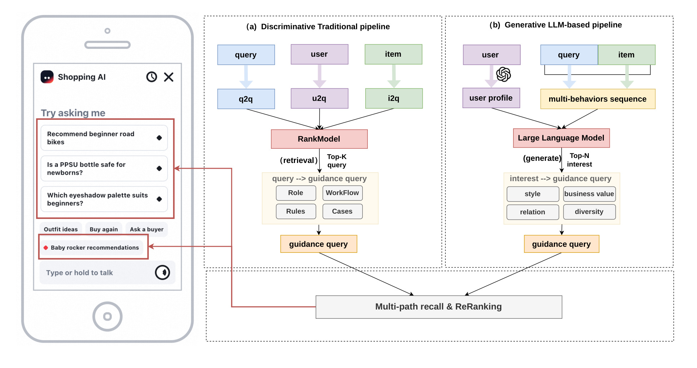
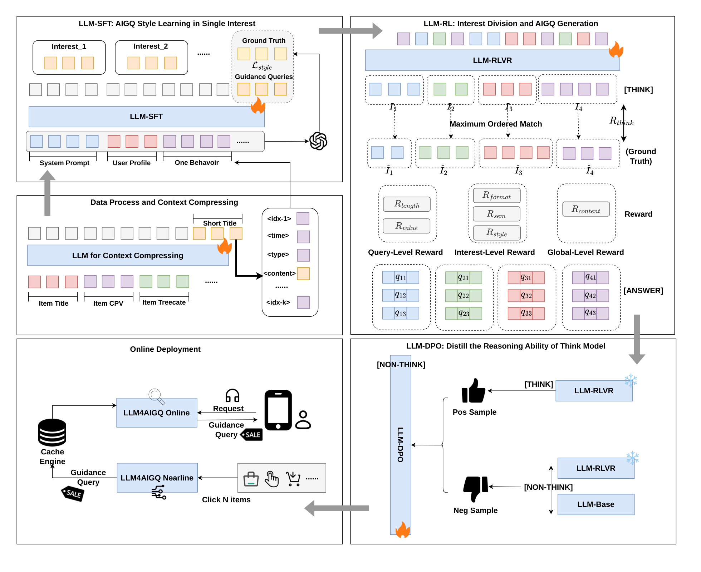
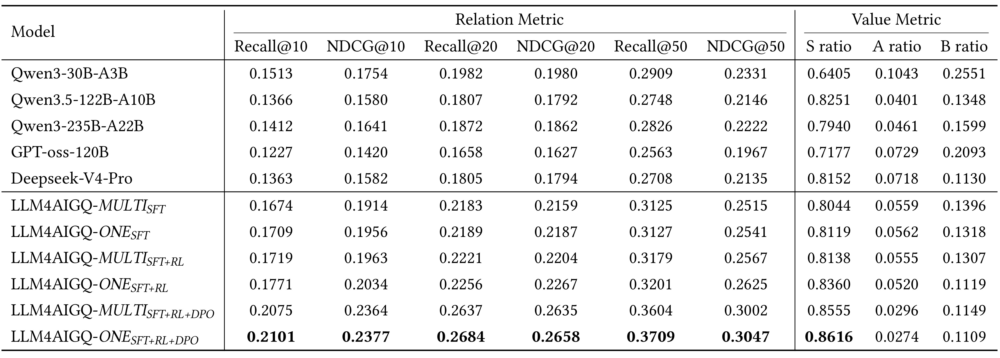
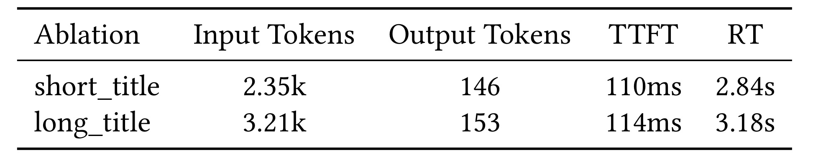
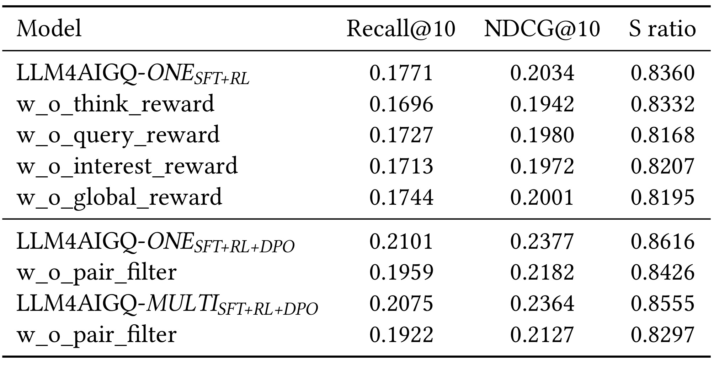
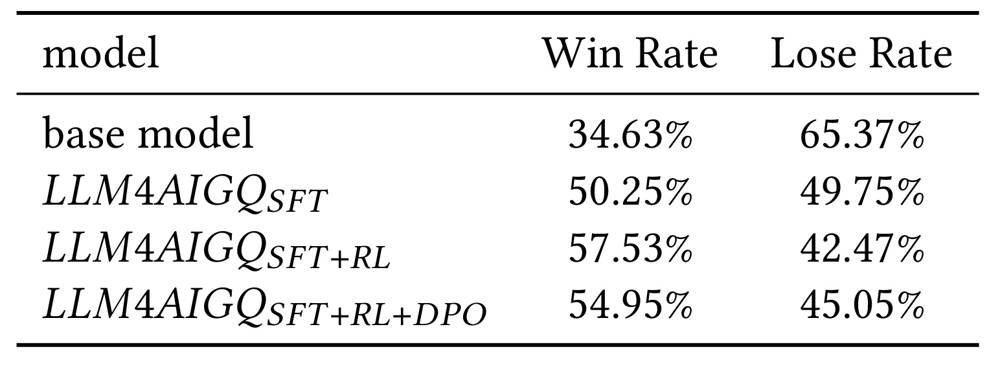

LLM4AIGQ：面向多兴趣挖掘的 LLM 引导查询生成框架
论文：LLM4AIGQ: LLM-based AI Guidance Query Generation Framework for Multi Interest Mining。第一作者 Xiangchen Pan，首页署名为华中科技大学与阿里巴巴；其余作者均来自阿里巴巴，Xing Fang 另署名南开大学。论文为 arXiv:2609.03674 v1，提交日期为 2026-09-03。论文首页仍保留会议模板中的占位会议名称和 DOI，不应据此称为正式接收。代码/项目页：本轮未核验到独立公开链接。
这篇工作的输出是购物智能体入口中的个性化问法，用户点击后才开始一次购物咨询。它将单兴趣表达学习、多兴趣推理和近线服务放在同一条训练部署链路中，重点在于让历史行为转化为有指导价值的下一步问题。
传统 Q2AIGQ 先从多路行为中召回主搜索词，再把它规则泛化成引导查询；级联过程会损失信息并造成语义漂移，而且 user-item 共现信号难以表达用户的多种兴趣，最终生成的查询可能既缺少购物指导价值，也和真实购买意图不匹配。
1. 背景和问题
电商中的 AI guidance query（AIGQ）不是普通的搜索联想词，而是购物智能体界面里主动展示的“下一步可以怎么问”。用户点击它以后，查询会成为购物智能体的初始请求，因此好的 AIGQ 至少要同时满足三个条件：能从用户的行为和偏好中抽取出可解释的消费意图；能提出具有决策帮助的问法，例如比较参数、适配场景或筛选特定人群；还要足够短、合规、可以映射回真实商品。它位于推荐、搜索和生成式交互的交界处，评价不能只看语言是否通顺，还要看它是否把用户带向可能感兴趣的商品。
传统系统通常采用 Q2AIGQ 两阶段范式。第一阶段从用户画像、历史搜索和多行为序列、商品侧信息以及当前 query 中，通过 q2q、u2q、i2q 等路径召回用户可能的主搜索查询，再用排序模型选出 Top-K。第二阶段把这些中间 query 输入规则、案例和工作流模板，泛化出面向用户的 guidance query。这个架构的优势是每一步都容易接入已有检索系统，缺点也恰好来自它的“分步”：用户的兴趣先被压缩成一个中间查询，再被另一套规则重新改写，原始行为中的场景、时间、兴趣之间的关系无法完整传递。

Figure 1 的左半边把瓶颈画得很直观：query、user、item 分别进入多条召回路径，经过 RankModel 后才进入“query → guidance query”的规则化环节，信息要经过多个中间节点；右半边则把 user profile 和 multi-behaviors sequence 直接交给大语言模型，先抽取 interest，再同时考虑 style、business value、relation 和 diversity，最后生成 guidance query。这里的“生成式”并非简单把一个更大的模型接到末端，而是改变了中间表示：系统不再强迫所有兴趣先汇聚为一个主 query，而是让模型在同一上下文中拆解多个兴趣、推断各自的消费意图，再为每个兴趣生成候选。图中的下方 Multi-path recall & ReRanking 也提醒我们，论文并没有声称传统检索彻底消失；它要替换的是从中间 query 到指导问法的级联表达，并把结果继续放回已有推荐/搜索业务链路。
图中四项生成要求也构成了后续实验的阅读顺序。风格决定一句话是否像可点击的购物咨询；商业价值要求它能提供参数、场景或者人群方面的信息差；相关性要求问法可以连回用户的兴趣和商品；多样性则要求不同候选不要只是换词重复。这四项并不被图中的一个向量距离自然涵盖，因此作者随后用教师分解、价值判断器以及分层奖励分别提供监督。图示呈现的是设计目标及流程变化，并没有在这里证明生成方法已经优于传统线上系统；这种优越性还需要后面的离线实验和线上点击结果来支撑。尤其右侧仍保留召回与重排的下游接口，实际工程接入的是候选生产方式，不能由此推断商品排序器也被大模型完整替换。
论文将问题归纳为三类。第一是噪声历史下的多兴趣建模：用户偶尔点击、曝光偏差和短期冲动行为会混在一起，画像更偏长期稳定兴趣，行为序列更偏短期动态兴趣，二者必须共同使用。第二是没有显式 ground truth：同一个用户可能接受多个不同问法，不能用单一标准答案简单监督，因此需要教师模型、语义匹配、规则约束和价值评估共同构造信号。第三是线上延迟：如果每次打开购物引导界面都让模型进行多步思考，响应时间会不可接受。LLM4AIGQ 的核心问题因此不是“能否生成一句话”，而是如何把兴趣分解、意图推理、查询生成和低延迟服务组成一个可训练、可评估的闭环。
从推荐系统视角看，这个任务还有一个容易被忽略的评价张力：兴趣覆盖和表达多样性并不天然等于商业价值。查询如果只复述高频商品词，可能相关但没有决策帮助；如果追求过度新颖，又可能无法对应用户会购买的商品。论文把 S/A/B 价值等级、语义相关性和多兴趣结构分开处理，实际是在回答“哪些内容应该被奖励、在哪个层级奖励”的问题。它还把长期画像与短期行为的职责拆开：画像帮助解释稳定偏好，行为序列负责捕捉当前触发点和兴趣转移。这样的分工使得后续实验可以分别观察单兴趣 SFT、混合兴趣 RL、非思考推理和服务延迟，而不是把所有提升归结为“大模型更强”。
已有查询推荐路线与这篇论文的关系，也需要放回原文相关工作中理解。作者先讨论基于查询与商品语义相似度的检索，再讨论加入用户画像、历史行为注意力以及序列建模的个性化搜索；更进一步的路线尝试用知识图谱或用户—查询—商品图分解多种兴趣，或者联合搜索与推荐两类行为。共同点是这些方法已经在努力辨认用户喜欢什么，不能把传统推荐概括为完全没有多兴趣建模。本文强调的新任务缺口在于，挑出一个相关商品或搜索实体之后，还要形成具有咨询目的、能解释购物决策的自然语言问法。因此，它对既有方法的批评应限定在本文描述的两阶段引导查询生产链路，不能扩大成所有判别式推荐模型都无法理解意图。
原文对直接微调混合兴趣历史的观察进一步限定了研究对象：强兴趣容易挤占有限的输出位置，低频触发词则不容易进入最终候选。即使系统一次生成多条句子，如果它们都围绕同一个主兴趣展开，表面上的候选数量也没有转化成兴趣覆盖。作者据此把学习过程拆开，让模型先在教师切好的单兴趣序列中学习问法，再回到混合序列中学习分组和组合。这是一种针对监督任务冲突的课程安排，是否有效要看单兴趣和混合兴趣两条分支在相同训练阶段下的对照，而不能只看最终模型比未适配的基座强多少。
此外，论文的噪声问题同时影响输入与监督。历史中的偶然交互未必代表稳定购买意愿，未来发生的商品交互也可能属于刚出现的新兴趣。作者一方面用画像与行为联合建模，另一方面在离线评价中按历史和未来正例的语义一致程度赋权；这使系统更重视从已有兴趣可以解释的未来行为。我的理解是，这个选择有助于降低偶然行为对指标的扰动，但也使突然转变兴趣的样本受到较小影响。它与主动发现未知需求之间存在取舍，所以本文更适合被理解为根据已观察兴趣生成有价值的购物入口，而不是已证明能预测所有新需求。
2. 方法
2.1 Data Process and Context Compression
模型输入由任务指令 $R$ 和用户上下文 $C_u$ 组成，用户上下文又由画像 $P_u$ 与历史序列 $S_u$ 构成。画像由 Qwen 根据消费模式和基本个人信息总结；序列中的每个行为包含时间、行为类型和内容，类型包括 like、favorite、add-to-cart、purchase、search，非搜索行为的内容是商品标题，搜索行为的内容是查询词。作者只保留最近 50 条行为，并以“索引、相对当前时间的间隔、行为类型、行为内容”编码，行为之间用分隔符连接。这个截断策略把输入重点放在短期兴趣，同时用画像补偿长期偏好。
商品标题通常包含营销词、旗舰店信息和重复属性，直接放入上下文会浪费 token，还会诱导模型模仿冗长的标题。因此作者先让 Qwen3-30B-A3B 从原始标题、CPV 信息和品牌/类目信息抽取短标题，再用容量更大的 DeepSeek-V4-Pro 输出作为标准答案，微调短标题任务。其训练目标是：
符号解释：$x=[i_d,i_c,i_b]$ 是商品标题、CPV 和品牌类目信息，$z_t$ 是第 $t$ 个短标题 token，$T$ 是短标题长度，$\theta$ 是模型参数。该目标本质是标准自回归交叉熵，但它服务于后续推荐任务：先把行为内容压缩成核心卖点和用户关心点，后面的兴趣分组就不必在大量店铺和促销噪声中寻找语义。要注意这里的教师模型只用于数据构造，线上不是每次实时调用它。
2.2 SFT Training: AIGQ Style Learning in Single Interest
SFT 阶段首先定义什么是有指导价值的 AIGQ：可以用于单商品咨询、比较决策和类目选择，表达简洁、内容合规，且对用户的下一步决策有帮助。直接拿混合兴趣序列微调会让模型过早把注意力放在“选哪个主兴趣”上，低频触发词容易被淹没，推理时还可能只围绕一个最显著兴趣生成多个候选。于是作者先调用强教师模型切分历史序列，把每个兴趣对应的行为按时间顺序组成子序列 $S_k$，再为每个子兴趣生成参考 AIGQ。 在这种数据构造下，SFT 只把画像和单一兴趣子序列给模型，目标是先学习问法、长度和指导价值，而不是同时解决多兴趣分割。其目标为：
符号解释：$P_u$ 是用户画像，$S_k$ 是第 $k$ 个兴趣子序列，$K$ 是兴趣数，$y_t$ 是目标 AIGQ 的第 $t$ 个 token，$T$ 是输出长度，$\theta$ 是 Qwen3-30B-A3B 参数。输入输出的连接关系是“一个兴趣子序列 → 一组参考问法”，所以该阶段的能力是风格迁移和局部生成；真正的兴趣发现留给后面的 RL。论文比较了单兴趣 ONE 分支和混合兴趣 MULTI 分支，后面的结果显示 ONE 分支在每个训练阶段都更稳，这正是该数据设计的实验验证。
2.3 RL Training: Interest Division and AIGQ Generation
RL 阶段把真实困难重新放回任务。指令要求模型先逐步思考，再输出 JSON：Step 1 根据时间接近度、语义相关性和画像偏好把混合序列最多拆成三个子兴趣；Step 2 对每个兴趣总结标签、推断当前消费意图并预测下一个可能偏好的商品；Step 3 为每个兴趣生成三个 AIGQ 并给出归一化置信度。这里的 think 是训练时的中间推理过程，最终答案只是兴趣标签与查询的结构化结果，二者在 DPO 阶段会被明确区分。 think-level reward 用 DeepSeek-V4-Pro 产生参考子序列和兴趣标签，再通过保持顺序的最优匹配对齐预测与参考。匹配分数为：
符号解释：$\hat S_i$ 是教师的第 $i$ 个兴趣子序列，$S_j$ 是模型的第 $j$ 个子序列，交集衡量行为重合，前面的调和式控制重合比例，后面的对数项使较长且重要的主兴趣获得更有区分度的分数。作者用动态规划表允许跳过某些预测或参考子序列，并通过回溯得到有序匹配集合 $M$。在匹配后，动作奖励看行为是否对齐，逻辑奖励用 mge-small 编码器和余弦相似度判断兴趣标签是否语义相近，二者相乘形成匹配奖励：
符号解释：$R_{action}$ 是参考与预测子序列的行为重合度，$R_{logic}=g(f(\hat I_a),f(I_b))$ 是兴趣标签的语义相似度，$f$ 为编码器、$g$ 为余弦相似度。另有 $R_{think\_format}$ 检测 Step1/2/3 及 JSON 字段是否完整；它把“会推理”约束为可解析流程，而不是只看最终句子像不像教师。 query-level reward 逐条评估生成的查询。长度奖励要求不超过 15 个汉字；value reward 由人工标注数据训练的 judge model 给出 S/A/B 等级，S 表示针对具体人群或场景、能支持参数比较，A 可能是旗舰店或广告式表达，B 则包括不通顺、不能映射到真实商品、类目不匹配或不安全内容。其分段奖励写成：
符号解释：$r_t$ 是 judge 对第 $t$ 条查询的等级。这个设计把商业指导价值从“语义相关”中单独拿出来，避免模型只生成看似相关、实际没有决策信息的短句。 interest-level reward 在一个子兴趣内部同时控制正确性、多样性和数量。参考问法与候选问法用 mge-small 的余弦相似度计算，并按模型给出的置信度加权：
符号解释：$q_{ki}$ 是第 $k$ 个兴趣的第 $i$ 条候选，$\hat q_k$ 是参考查询，$c_{ki}$ 是置信度，$w_{ki}$ 是归一化权重。高置信候选承担更多语义对齐责任。风格多样性用 Type-Token Ratio：
符号解释：分子是同一兴趣下所有查询的不同 token 数，分母是 token 总数；值越大，表示三条问法越不容易被同一模板重复占满。$R_{format}$ 则要求每个兴趣恰好生成指令规定的 $T$ 条查询。 global-level reward 作用于不同兴趣之间，先对每组查询嵌入均值池化，再使用跨兴趣内容差异防止所有兴趣都生成同义问法。
符号解释：$N$ 是兴趣组数，$E_{ij}$ 是两组查询均值嵌入之间的语义相似度；奖励等于一减去非对角元素的平均值。它控制跨组语义重复，与只计算同组不同词占比的风格奖励互补。原式在只生成一个兴趣时分母为零，论文没有交代该边界的实现约定；复现需明确关闭该项或设置合法默认值，不能假定所有用户恰好都有三个兴趣。
符号解释：$T$ 是每个兴趣内的查询数，$w$ 表示各奖励权重；查询层按所有候选平均，兴趣层按兴趣组平均，避免单纯靠增加输出条数提高总奖励。格式奖励在每组恰好生成规定数量时取一，否则取零。这里先在各层归一化再加权，数值权重不能脱离奖励本身的尺度直接当作业务重要性排序。 最终将 think、query、interest、global 四个层次的信号加权后送入 GRPO。论文报告的权重为 $w_{think\_format}=0.5,w_{match}=2.0,w_{length}=0.2,w_{value}=0.8,w_{sem}=0.5,w_{style}=0.3,w_{format}=0.2,w_{content}=0.5$。GRPO 的组内优势和裁剪目标为：
符号解释：$G$ 是同一输入采样的输出组大小，$r_i(\theta)=\pi_\theta(o_i|q)/\pi_{old}(o_i|q)$ 是新旧策略概率比，$A_i$ 是以组内奖励均值和标准差归一化后的优势，$\epsilon$ 是裁剪范围，$\beta D_{KL}$ 抑制策略偏离参考分布。它让多个目标在组内相对比较，不需要为每种可能问法指定唯一答案。
2.4 DPO Training 与近线/在线部署
RL 后的模型在 think 模式下质量较好，但线上不能承担完整推理轨迹的 token 成本；直接切成 non-think 会产生输出分布偏移。DPO 的正例来自 RL checkpoint 的 think 生成结果，但只保留 think 生成的最终答案，不是把整段 CoT 当正例；负例是同一输入下 non-think 的回答，其中 70% 来自 RL checkpoint，30% 来自 base model。其目标为：
符号解释：$x$ 是输入，$y_w$ 是保留最终答案的正例，$y_l$ 是 non-think 负例，$\pi_\theta$ 是待训练策略，$\pi_{ref}$ 是参考模型，$\beta$ 控制偏离参考模型的温度。作者再计算正负样本语义相似度，移除最相似的 30% pair，减少“几乎分不清”的无效偏好对。这里 DPO 的目标是把 think 的有效结果蒸馏到 non-think 输出，而不是继续追求更高的 teacher pairwise 胜率。

Figure 2 的信息流要按顺序读：底部数据处理先把商品信息压成 short title；左上 SFT 在单兴趣子序列上学习问法；右上 RL 同时展开兴趣分割、最大有序匹配和四层 reward；右下 DPO 把 think 的正例最终答案和 non-think/base 的负例送入偏好优化；底部 Online Deployment 再把 nearline 生成和 online 读取分开。图中 online 部分不是“线上重新生成”：近线侧在累计若干次 click/favorite 等交互后触发 non-think 模型，生成多个兴趣及查询并写入 mapping table；用户进入购物引导界面时，线上只根据 user_id 和向量检索读取候选，再用轻量匹配/排序返回。这个区别是论文满足延迟约束的关键，近线的触发行为更新与线上请求读取是两条不同时间尺度的链路。
训练侧与部署侧的另一处连接在于，近线调用已经采用直接输出答案的模式，因此偏好训练所解决的输出形式偏移发生在真正的候选生产环节。线上读取虽然快速，但候选的新鲜度依赖近线任务何时触发、多久完成以及写回是否成功。原文仅用累计若干次交互表达触发条件，没有披露具体阈值，也没有给出过期时间或写回失败策略。图中缓存和索引因此只能说明两条链路的分工，不能给出覆盖率或尾延迟的保证。若用户刚产生新的购物意图而尚未满足触发条件，在线服务可能继续读取旧候选；这是由本文服务架构可以推导的边界，原文没有单独量化其影响。 图中的训练奖励也不会全部留到在线请求中执行。有序匹配需要教师分割作为参考，价值判断器和语义编码器参与训练监督；在线召回依赖已存储的用户到查询映射。因而评估部署成本时，应把教师构造、学生训练、近线生成和在线检索分别统计。论文只给出了其中部分硬件与生成耗时，不能把在线链路省掉显式思考等同于整个系统不再消耗推理资源。
3. 实验结果
3.1 数据、指标与实现设置
实验使用 2026 年 6-7 月 Taobao 与 Tmall 的多行为日志。短标题任务从 Taobao 商品 CPV 表抽取 8,000 条；SFT 从高活跃用户的一日交互中采样 5,000 条，再由 DeepSeek-V4-Pro 拆成单兴趣样本，共 11,259 条；RL 使用 3,000 条；DPO 收集 5,000 条，偏好过滤后保留 3,500 条；离线测试集为 1,000 条。不同阶段从不同时间分区采样，论文以此做数据隔离。
相关性评估将每个测试样本最近 10 个交互商品遮蔽为正样本，从全商品池随机采 500 个负样本。对每条生成查询与这 510 个商品算语义相似度，然后看正样本是否进入 top-k，使用 Recall@k 和 NDCG@k。这里必须明确：离线评估是“最新 10 个正例 + 500 个随机负例”的抽样排序，不能与 MURAL 一类全量排序口径混为一谈。作者还用历史行为 $H_i$ 与正样本 $P_i$ 的相似度矩阵求置信度：
符号解释：$L_i$ 是第 $i$ 个样本的历史行为数，$M$ 是正样本数，$S_{hp}$ 是历史与正样本之间的语义相似度，$c_i$ 是该样本对评估结果的权重。置信度加权 Recall 为：
符号解释：$R$ 是测试样本数，$T$ 是每个样本的生成查询数，$rank_i^t(j)$ 是第 $t$ 条查询下第 $j$ 个正样本的排名，指示函数在排名不超过 $k$ 时取 1。NDCG 使用 DCG/IDCG 归一化，强调正样本出现在更前位置的收益，而不是只计是否进入 top-k。
符号解释：$DCG$ 是按排名对正例命中进行对数折扣的收益，$IDCG$ 是理想排序时的收益，其他符号与前式相同。每个查询先计算归一化收益，再按用户上下文置信度加权平均；结果不是所有用户等权的点击率。因为权重来自历史与未来交互的语义相似度，它会改变不同兴趣连续性样本在总分中的贡献。论文未展示不加权版本的完整对照，因此不能确定提升在兴趣突然转移的用户中是否同样明显。
实现以 Qwen3-30B-A3B 为 backbone，最大输入/输出长度分别为 8192/2048。SFT 用 4 张 H20、500 steps、每卡 batch 2、梯度累积 8、LoRA rank 16、学习率 $10^{-5}$；RL 用 ROLL 在 16 张 H20 上训练 100 steps，group size 8、学习率 $10^{-6}$，vLLM 作推理引擎；DPO 用 4 张 H20、LoRA 500 steps、梯度累积 4。所有离线实验都使用相同指令和 non-think 设置。
3.2 主结果：三阶段训练与单兴趣分支

Table 1 同时报告 Relation Metric 和 Value Metric。最终 LLM4AIGQ-ONESFT+RL+DPO 的 Recall@10 为 0.2101、NDCG@10 为 0.2377、Recall@20 为 0.2684、NDCG@20 为 0.2658、Recall@50 为 0.3709、NDCG@50 为 0.3047；价值侧 S ratio 为 0.8616，A ratio 0.0274，B ratio 0.1109。与基础 Qwen3-30B-A3B 的 0.1513/0.1754/0.6405（分别为 R10/N10/S ratio）相比，相关性与 S 级价值比例都提高。MULTI 分支的最终 R10/N10/S ratio 为 0.2075/0.2364/0.8555，略低于 ONE，说明先拆成单兴趣样本学习风格，再由 RL 负责混合兴趣分割，更能避免信息稀释。
表中更值得注意的是训练阶段的逐步变化：ONESFT 从 0.1709/0.1956/0.8119 提高到 +RL 的 0.1771/0.2034/0.8360，再到 +DPO 的 0.2101/0.2377/0.8616。RL 对兴趣拆分和相关性有帮助，DPO 在 non-think 离线设置下带来最大跳升，说明它确实缓解了“训练有 think、推理没 think”的条件分布偏移。zero-shot 大模型的 S ratio 可能较高，但相关性不一定更好；例如 Qwen3.5-122B-A10B 的 R10/N10 为 0.1366/0.1580，低于 30B 基座和训练后模型。作者推测大模型更倾向生成新颖但难映射到测试商品的问法，这一解释合理但仍属于基于结果的推测，不能当成已证实机制。
读取这张主表时应将不同证据强度分开。与未做领域适配的大模型比较，验证的是整套领域数据和后训练方案能否改善该任务；它不能单独证明参数更少就是优势。单兴趣与混合兴趣分支的同阶段对比则更接近检验数据拆分策略，但两者的有效训练样本构成也会变化。再看最终模型的价值分布，最高的优质等级占比并不意味着低质输出被完全消除，仍有约一成候选被判断为最低等级。因此上线还需要保留质量筛选，不能把平均价值明显提高理解成所有生成问法都可以直接展示。表中也没有报告同一配置多次训练的均值与方差；两条最终分支相近的小幅差异应视为当前设置下的观察，不应夸大为稳健排序规律。高截断位置的结果同样来自这批抽样候选，增加截断深度并没有改变候选池的难度口径。
3.3 上下文压缩与推理效率

Table 2 在 100 个测试样本上用短标题和原始长标题做线上压力测试。short_title 的平均输入 token 为 2.35k、输出 146、TTFT 110ms、RT 2.84s；long_title 对应 3.21k、153、114ms、3.18s。由此可计算，输入 token 减少约 26.8%，RT 减少约 10.7%，TTFT 也从 114ms 降到 110ms，输出 token 小幅下降。这个结果把“压缩上下文”从工程直觉变成了可测的 latency 收益，而且作者观察到模型会模仿商品标题的长度和风格，短标题因而也会诱导更简洁的 AIGQ。
但这不是无条件压缩：短标题模型本身依赖商品标题、CPV、品牌/类目信息和强教师生成标准答案，如果抽取丢失关键规格，后续兴趣和价值判断也会一起丢失。表2只报告平均响应，不包含长尾延迟、不同商品类目的分位数，也没有给出压缩前后的相关性单独对照，因此它能支持“平均输入和 RT 下降”，不能单独证明压缩对所有用户都保持无损。
表中首词延迟与完成整段输出的响应时间变化幅度不同，这提示成本并非只由输入长度决定：解码长度、执行引擎调度以及请求并发也可能共同影响实际耗时。这里只能用作者给出的平均值做同一测试条件下的对照，不能从输入减少比例直接推导等比例吞吐提升。更关键的是，虽然作者称其为线上压力测试，所收集的是模型生成响应，两点八四秒对应生成耗时，不是用户打开页面后读取缓存候选的在线请求延迟。近线系统仍需要在合理时限内产生新候选，但用户请求不必等待这一步完成。用该表评估服务可行性时，应关注它降低了候选生产的平均开销，而不是把一个秒级数字当作页面查询的性能承诺。表格只有两种标题条件，没有单独测试不同历史长度，因此最多五十条行为的截断效果也不能由此表独立归因。
3.4 多层奖励与 DPO 过滤消融

Table 3 的第一组以 ONESFT+RL 为完整基线：R10/N10/S ratio 为 0.1771/0.2034/0.8360。去掉 think reward 后降到 0.1696/0.1942/0.8332，是相关性下降最明显的一项，说明兴趣分割的推理监督确实影响正样本命中；去掉 query reward 后为 0.1727/0.1980/0.8168，S ratio 的损失最大，符合长度约束和 judge value 主要作用于查询质量的预期；去掉 interest reward 后为 0.1713/0.1972/0.8207，说明语义正确性和同簇多样性都不可省；去掉 global reward 后为 0.1744/0.2001/0.8195，提示不同兴趣之间会重新变得同质化。四个奖励不是简单重复：一个管“拆得对不对”，一个管“问法值不值得”，一个管“同一兴趣内是否正确且多样”，一个管“不同兴趣是否拉开”。
第二组比较 DPO 的偏好过滤。ONESFT+RL+DPO 完整结果为 0.2101/0.2377/0.8616，去掉 pair filter 后变为 0.1959/0.2182/0.8426；MULTISFT+RL+DPO 则从 0.2075/0.2364/0.8555 降至 0.1922/0.2127/0.8297。作者的解释是，正负样本过于相似会让偏好 margin 不明显，训练变得不稳定并产生模板化输出。需要保留边界：表3只给出三项指标，没有报告过滤比例以外更细的样本难度、方差或不同随机种子的结果，所以它证明的是当前采样设置下过滤有效，而不是所有 DPO 数据都应固定删除相似对。
消融结果支持奖励分工的方向，却没有直接量化每项奖励所声称的全部中间机制。例如，去掉跨兴趣奖励后优质等级占比下降，与作者提出的兴趣同质化解释一致，但表格没有另列兴趣间相似度的变化曲线；去掉思考奖励的相关性下降，也不能仅靠这三列区分是分割准确性降低还是格式约束失效。严格复现时应同时记录行为重合、标签相似度、同组词汇多样性与跨组相似度，才能把最终收益与对应机制连接起来。偏好过滤还同时减少样本量并改变样本组成，表中没有提供等样本量随机删除对照，所以现有证据无法完全拆开过滤策略、训练有效步数以及数据难度变化的贡献。作者报告的是其组合设置有效，不能据此宣布高相似偏好对在所有任务中都没有学习价值。
3.5 Teacher pairwise 与线上 A/B

Table 4 用 Gemini-3.5-Flash 作 LLM-as-Judge，在相同用户上下文下把各版本 AIGQ 与 DeepSeek-V4-Pro teacher 对比，维度包含消费意图一致性、购物指导价值、内容合理性和语言质量，并采用 A/B 随机化以减轻位置偏差。base model 胜率 34.63%，SFT 为 50.25%，SFT+RL 为 57.53%，SFT+RL+DPO 为 54.95%。这条曲线不能被简化成“DPO 继续提升所有指标”：DPO 胜率从 RL 的 57.53% 降到 54.95%，但仍高于 teacher 对比基准线。作者的解释是 DPO 优先把 think 能力迁移到高效 non-think 推理，存在质量与效率的权衡；这与 DPO 的训练目标一致，但胜率变化本身不能证明具体延迟下降，因为表4没有测线上延迟。
这张表还限定了超过教师的含义：裁判模型在给定用户上下文下更常选择学生的生成结果，并不等于真实用户有相同比例的偏好，更不等于学生在所有能力上超过教师。随机交换候选位置有助于控制位置偏差，但不能排除裁判对语言风格、长度和表达形式的系统性偏好。表中只列胜率和败率，没有给出平局处理、各维度分数和人工一致性，因此主要可作为检索指标之外的补充证据。特别是偏好训练后自动相关性提高而裁判胜率下降，两者评价的对象不同：前者检查问法与抽样商品的匹配，后者综合评判购物帮助和语言质量。保留这项分歧比挑选单一有利指标更能说明模型的实际取舍。
线上实验覆盖 Tmall 的购物引导、搜索和商品详情页。初始 10% 流量实验中，实验组 uCTR 比 baseline 提升 4.46%；扩大到 40% 后，连续六天的整体 uCTR 仍比 baseline 提升 2.53%。这里的指标是 uCTR，不是 GMV，也不是转化率或收入；论文没有报告置信区间、显著性检验、各场景拆分和流量实验的精确用户数，因此可据此说线上点击指标保持正向，但不能外推为确定的商业收入提升。更重要的是，线上结果验证了近线生成/在线读取的系统形态在较大流量下仍可运行，却没有把“每次请求在线生成”当作实验条件。
扩大实验流量后增益缩小，也不能在缺少人群与时间对齐信息时直接解释为模型效果衰减。两个阶段可能覆盖不同用户组成、日期和上下文分布；文中没有提供分桶构成及逐日置信区间，因而目前只能分别保留两个阶段的相对点击提升。六天正向结果提供了短期运行证据，尚不足以说明长期使用是否产生审美疲劳、重复点击或者更好的购买决策。后续若要评估完整业务收益，应把曝光机会、用户点击、后续咨询行为和商品转化按同一实验口径关联起来，同时记录新候选覆盖率，才能分辨生成内容质量与候选更新频率各自的作用。
4. 总结
LLM4AIGQ 的贡献可概括为一次针对引导查询场景的表示和训练重构：用用户画像加最近 50 条多行为序列替代单一主 query，用 short title 压缩商品侧噪声，用单兴趣 SFT 学 AIGQ 风格，再用多层 reward 的 RL 学兴趣切分与意图推断，最后用“think 结果的最终答案”作为 DPO 正例，迁移到 non-think 输出。它把生成质量、兴趣覆盖、查询价值、表达多样性和跨兴趣差异分别挂到可检查的奖励上，而不是只用一个模糊的整体分数。
从证据看，Table 1 的 ONESFT+RL+DPO 在抽样离线口径下达到 R10 0.2101、N10 0.2377、S ratio 0.8616；Table 3 说明各奖励与 pair filter 都有可观的消融损失；Table 4 则揭示 DPO 的真实取舍是胜率 57.53% 降至 54.95%，换取 non-think 部署能力；线上 10% 流量 uCTR +4.46%、40% 流量连续六天 +2.53%，支持“可落地且点击正向”的谨慎结论。它最值得迁移的思想不是某个固定模型名，而是将训练时的长链路推理与线上读取架构分开，并把不同层次的业务约束放进不同 reward。
局限也很明确。第一，论文是 2026 年 arXiv v1，首页会议名和 DOI 仍是模板占位，不能称正式接收；代码独立链接也未核验。第二，教师模型、judge model 和 mge-small 编码器参与数据构造与评估，教师偏差、语义编码偏差和 judge 偏差可能被学生模型继承。第三，离线正例是最近 10 个交互商品、负例是随机 500 个商品的抽样集合，和全量候选排序不可比，不能把 R10 直接当全站召回率。第四，线上只披露 uCTR 的相对提升，没有样本量、置信区间、显著性、长尾延迟和各业务场景拆分。第五，最多三个兴趣、每个兴趣三个查询、15 个汉字的约束适合当前业务，却可能损害长尾用户、低频兴趣或复杂购买决策。第六，DPO 的正负例定义依赖 RL checkpoint 的 non-think 输出，若负例质量或过滤阈值换域，效果未必稳定；Table 4 的胜率下降也表明蒸馏不是无损过程。
后续复现与跟进可优先做四件事：其一，在同一用户切分上补充全量商品池、难负例和多随机种子，报告 Recall/NDCG 的置信区间；其二，分别测 think 与 non-think 的 p50/p95/p99 延迟、token 数和缓存命中率，验证 DPO 的效率收益；其三，拆开 Tmall 购物引导、搜索、详情页以及新老用户，检查 +4.46% 和 +2.53% 是否由单一场景驱动；其四，用人工盲评或真实点击后的后续购买/加购行为复核 judge 的 S/A/B 标注，并测试兴趣数、查询数和 15 字长度约束的敏感性。对推荐系统团队而言，可借鉴的是“单兴趣学习局部表达、多兴趣 RL 学组合推理、近线产出线上读取”的分工；对模型团队而言，最应该保留的核验点是正例只取最终答案，不能把整段思维链不加区分地当作蒸馏目标。
我会把复现优先级放在可区分机制的最小对照上：先固定教师样本与评价集合，比较单兴趣和混合兴趣风格学习；然后只改变思考奖励，观察分割重合和最终商品匹配是否同时改善；最后在同一份偏好对上比较保留与移除推理轨迹的训练形式，确认收益确实来自最终答案对齐。这样的顺序有助于避免同时改变多个环节后只能得到一个总分，而无法判断下一轮优化应落在哪里。
还有两个实现边界需要在移植前明确。其一，跨兴趣奖励的原始公式要求至少两个兴趣，单兴趣用户必须有明确的数值处理，否则训练可能产生无效奖励。其二，生成置信度用于语义奖励加权，但论文没有展示概率校准证据，因此不宜直接把它当成用户点击概率。它在当前框架中的职责是分配候选间的训练权重。把这两点与近线触发阈值一起写进复现配置，可以使后续对照保持一致，也能减少由实现默认值造成的效果差异。